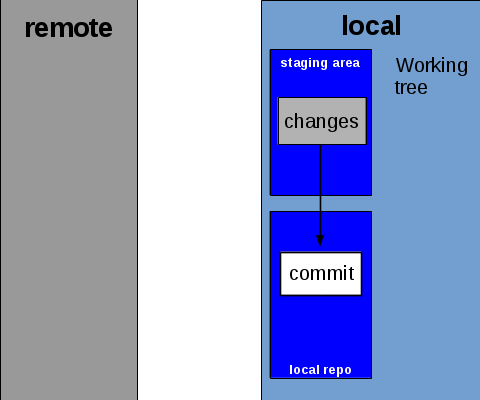
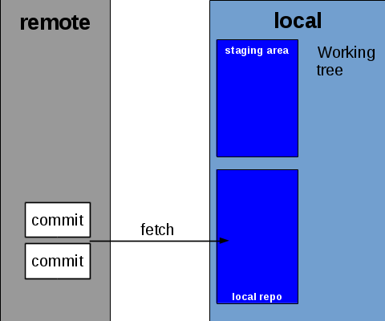

1-1 Git Basics 1-1 Git Basics
1-1 Git Basics 1-1 Git BasicsOne of the important things to understand about git is that it is a specific kind of VCS called a distributed version control system, meaning that it does not have a centralized location where all of the code history is stored, and the local copies all perform their version control functions from that repository. Instead, every copy of a git repository, or repo, as they are called, is fully-blown, having a complete copy of the code history. So, instead of relying on the web server for all of the functions of the VCS, git merely uses the web server as a means through which to keep all copies of the repository updated.
With that in mind, this lesson will teach you the basic operations in git and how it communicates with the repository stored on the Internet.
Although git keeps a full copy of the version history in every local repository, it is still important to distinguish a remote repository from a localrepository. Local repositories do not (usually) directly move code between themselves. Communication with git is almost always done between the local repo and the remote repo, and other local repos grab the changes from the remote.
In version control, keeping remote repos updated with code from local repos and vice versa is not as simple as a copy-paste operation. There are a number of steps involved from one end to the other to ensure that git does not destroy your code, but rather update it.
To accomplish this, git implements a staging area in each repository. The purpose of the staging area is to hold any changes that have been made to the local repo that have not been reflected on the remote repo, as well as any changes that have been made to the remote repo that haven't yet been reflected locally. This way, git knows exactly what to either update the code with or to upload to the remote repository.
Diagrams such as this one are usually used to visualize the staging area:

While you write your code, git watches all of the files in the repository for changes. When you are satisfied with the changes that you have made, you need to tell git that you want it to commit the changes that you have made to the version history.
In the first part of this process, git will tell you all of the files that have changed — including any new files, deleted files, renamed files, and even changes in any binary files that are in the repositories (such as images). At this step, you have to tell git what files you want it to include in the commit. Most often, you tell git to include all of the changes in the commit, but occasionally you might have reason to tell git to skip certain files in a commit.
Then, git asks you to write a commit message. In this message, you should write a detailed, yet succinct description of the changes you made in that specific commit.
Commit messages have two parts: a title and a description. However, most tools only show one text box to write into. In this case, the commit title is the first line of the commit message. Any lines following that are considered the description.
Generally, you should write a short summary of the changes you made into the title. Then, in the description, make a bulleted list (using hyphens) to describe in more detail exactly what you changed. If you have difficulty remembering exactly what you changed, git can show a delta file (known as a diff) that shows you exactly what you changed against the previous commit.
See an example of a good commit message
Once you write the commit message and save it, git completes the commit process. Instead of updating every whole file that was changed, git generates a diff file for the commit, which just describes the lines in each file that changed. For example, if you changed only one line in a file that was a thousand lines long, instead of committing all one thousand lines, git simply commits that one line that changed, which makes the commit itself much smaller in size.
Each commit has only one diff file. Git uses its own syntax within the diff to describe how different files in the commit changed.
Once the diff has been generated, git then creates a checksum of the whole commit. This is a one-way, 40-character hexadecimal hash (specifically a SHA-1 hash) of the diff and the commit message, or, in other words, a numerical value that represents the entire contents of the commit. From that point forward, that commit is referenced by that hash. A commit hash might look like this:
9e7224888a12c8ff3c76bc79e38732975e3e2541
Although this hash may look scary, whenever you have to refer to past commits, you can just use the first 7 characters of the hash — git will fill in the rest (you will see more on how commit hashes can be used in chapter 2).
9e72248
With the diff and commit hash, git then stores the commit in the repository's history.
Up to this point, everything that has happened has taken place completely within the local repository. Now, git copies this commit into the staging area, where it will keep it until the commit is uploaded to the remote repository.
At this point, as far as git is concerned, the commit process is complete. Although not recommended, you can keep working without doing anything further. You can continue to make new commits without uploading them, git will still keep the old ones in staging.
There may be a time that you want to undo changes. While spamming Ctrl+Z might work, if you have multiple changes across multiple files that you want to undo, it is easier to tell git to undo them for you. However, there is one important thing to note: it is difficult to undo part of a commit with git. The easier path is only between whole commits.
If you want to undo everything since the last recorded commit (this does not have to be your commit), then you simply tell git to reset (specifically, hard reset) the working tree to the last commit. This will delete all of your changes since that commit.
You can also undo a commit, if you realize that you don't want the changes contained in the commit, as long as you haven't pushed the commit yet (pushing will be explained in the next section). In this case, you tell git to reset the working tree to the commit before last. You can even undo multiple commits at once, if you want, just by telling git to reset to an even older commit.
Once you have made a commit, it is usually in your best interest to upload it to the remote repository. This process is known to git as a push.
This process is fairly self-explanatory. Git takes any unpushed commits it finds in the staging area and sends them to the remote repository. The copy of git that is running on the server that hosts the remote repository does all of the necessary work to insert the new commits into the history on the remote server.

Despite how simple this process is, to ensure that the code does not get corrupted, some operations between the local and remote repositories do have the chance of failing. With git, assuming that you have a stable internet connection and the server hosting the remote repository is functioning properly, this is almost always due to the fact that someone else has pushed a commit that conflicts with what you have, and you have not yet downloaded that commit into your repository. If you are trying to push code that conflicts what is in the remote repo, git will block the push and ask that you pull first, which is explained in the next section.
Retrieving new commits from the remote repo is a more complicated process than uploading them. Once again, this is to ensure that the code does not become corrupted and continues to function as expected.
The process of grabbing new commits from the remote repository is called pulling. A pull consists of two steps: fetching and merging.
This is basically the reverse process of a push. Git queries the remote repo for any new commits that it does not have locally. It then downloads these commits and places them in the staging area.
Unlike pushing, however, a fetch will not fail due to a code conflict, since the commit is only being put in the staging area, and not affecting any files in your local copy.
Although a pull is the operation that you are most likely to use when you want to get the latest commits from the remote repo, it is also possible to tell git only to perform the fetch.
Once the commits have been fetched, git must then incorporate these changes into the codebase in the local repo. This is done through a process called merging.
To do this, git analyzes the diff each commit that it fetched. It then changes every file changed in the commit as specified by the diff. So, if three lines were added and one line was deleted in a file, then git will add those three lines and delete the line that was deleted. If there are no code conflicts, then git results with a fast-forward, where the repository is automatically updated to the latest code from the remote.
As was the case with fetching, if you have already fetched commits from the remote, then it is possible to tell git separately to merge the fetched commits into the local codebase. However, this is a little more complex than fetching. You will learn more about how merging works in git in the next lesson.
It is possible, however, for a merge to fail. This is usually due to one of two reasons.
If you have changes in your repository that you have not yet committed, git will refuse to merge any commits to protect your work. The solution to this is simple: commit your work, or reset the state of your repository if you don't want to keep it.
As has been hinted, it is also possible for the merge to fail because another commit conflicts with a commit that you haven't yet pushed. This happens when a commit that was pushed after you last pulled changed the same line that you changed. Since git doesn't know which commit should take precedence in this case, it will error out with a merge conflict, and ask that you resolve it manually.
To resolve the conflict, you can either open up the file directly in the text editor or use a special merge tool.
Once you have resolved the merge conflicts, you need to commit the result of the merge to get the repository in line again. However, git will automatically generate a commit message for you if you had to merge. All you have to do is sign off on the commit.
Resolving merge conflicts will be explained in greater detail in lesson 2-4.
At the end of a pull, one of the follwing results will occur, based on what happened during the pull:

Although git may watch the entire repository folder for changes, there may be files within the repository that you do not want git to track. Usually, these files are:
If this is the case, then you can actually tell git to ignore these files. This is done by the means of a .gitignore file, which lists file patterns to be ignored.
A .gitignore can specify folders or files, and all files that match a certain expression.
You will learn more about how to use a .gitignore file in lesson 2-1.
| ← Chapter 1 Overview | 1-1 Git Basics | 1-2 History and Branching → |